In-Hand Dice Reorientation with Reinforcement Learning
Training a Unitree Dex3-1 robotic hand (3-finger, 7 DOF) to reorient a dice in-hand to show any target face on top, using Proximal Policy Optimization in MuJoCo simulation with GPU-accelerated MJX physics.
Project Overview
Dexterous in-hand manipulation is one of the hardest challenges in robotics. This project tackles the problem of reorienting a standard dice to show any of its 6 faces on top, using only a 3-fingered robotic hand. The entire pipeline is built from scratch: custom MuJoCo environments, PPO with curriculum learning, finger gaiting reward shaping, and GPU-accelerated training with 2048 parallel environments.
The policy learns to coordinate three fingers to hold, rotate, and reposition the dice through a 7-phase curriculum that progressively increases rotation difficulty. A bioinspired finger gaiting reward encourages the hand to lift and replace individual fingers while the other two maintain a stable grip, enabling rotations beyond the static grasp workspace.
Key Contributions
- End-to-end RL pipeline for 3-finger dexterous manipulation from scratch in PyTorch
- Bioinspired finger gaiting reward that encourages cyclic lift-hold-replace contact patterns
- 7-phase curriculum learning with per-phase control of exploration noise, reward weights, and action scale
- Hybrid MJX training loop: GPU-accelerated JAX physics with PyTorch policy optimization
- Domain randomization on friction, mass, damping, stiffness, and observation noise
The Hand: Unitree Dex3-1
The Dex3-1 is a compact 3-finger robotic hand extracted from the Unitree G1 humanoid model in MuJoCo Menagerie. It has a thumb with 3 actuated joints and two fingers (index, middle) with 2 joints each, totaling 7 degrees of freedom. The hand uses native MuJoCo position actuators with PD control for stable, RL-friendly operation.
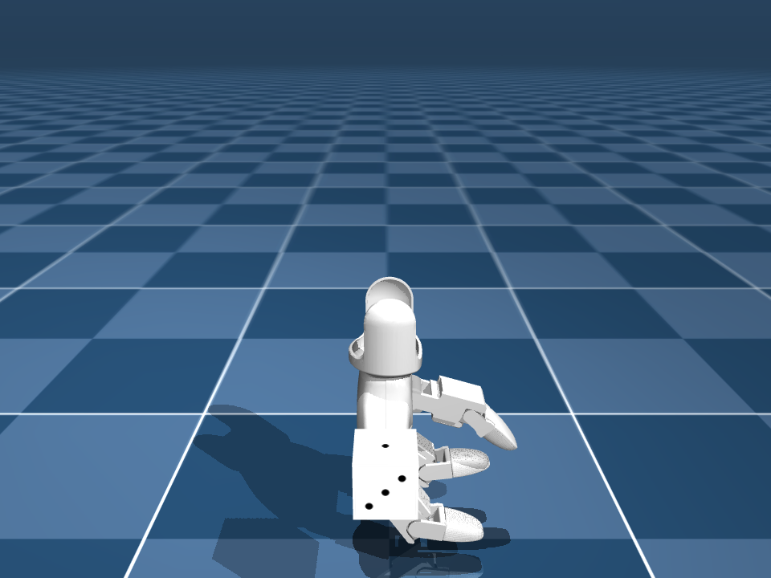
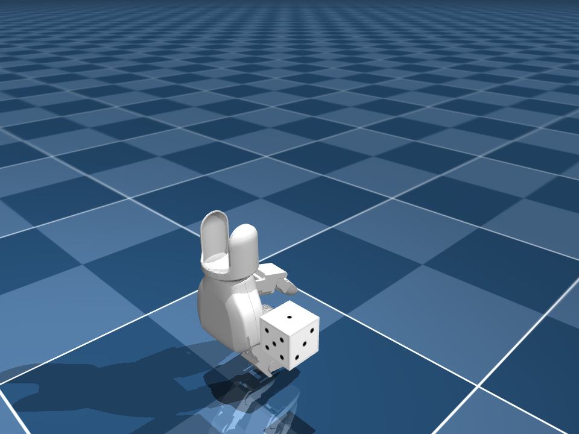
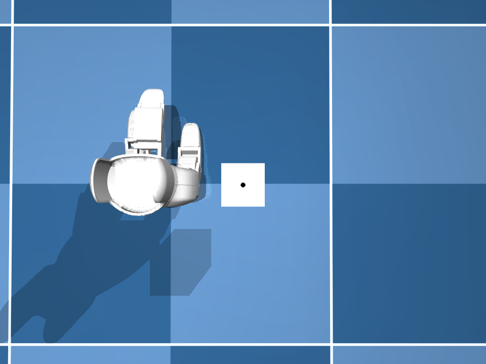
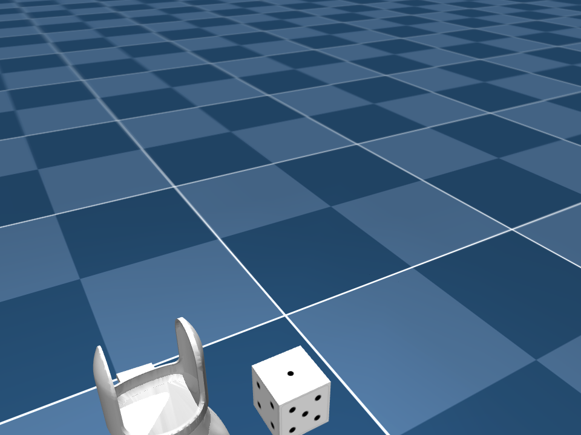
Actuator Type
Position (kp=5)
Damping
dampratio=1
Force Range
[-1.5, 1.5] N
Action Scale
0.3 rad
Grasping the Dice
The dice is held in a pre-tuned three-finger cradle grip. The reset sequence uses a 2-phase approach: 300-step interpolation to grip position followed by 100-step settle, ensuring stable initial contact. With action = 0, the hand holds the dice indefinitely, giving the policy a safe default to explore from.
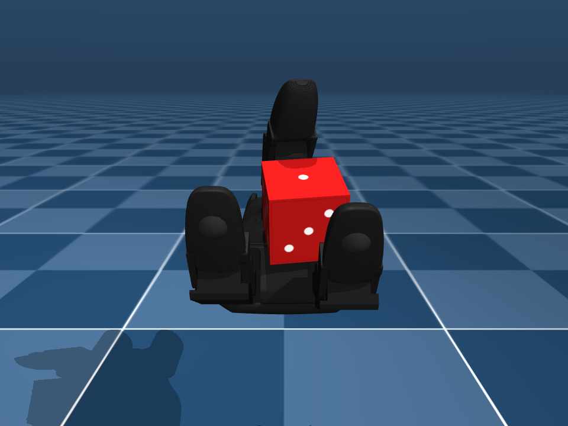
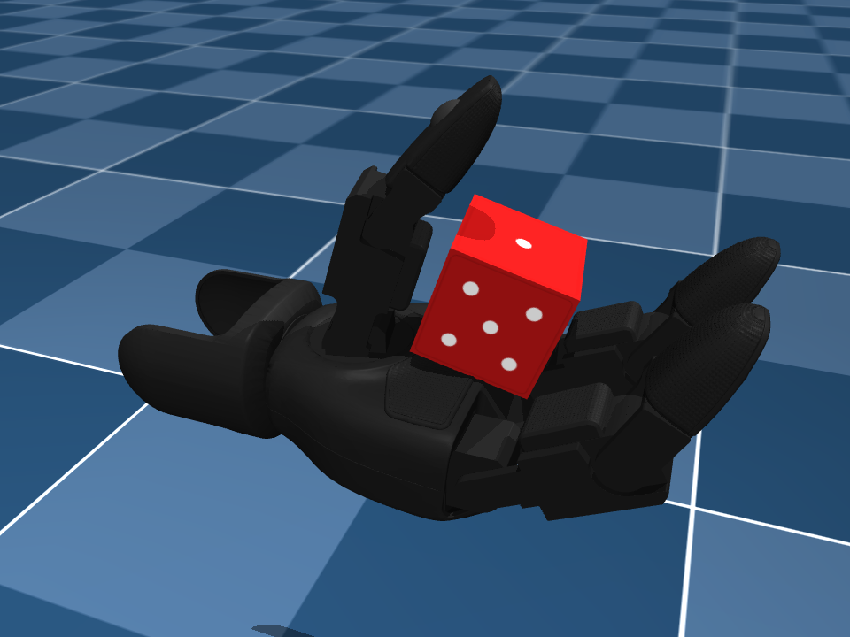
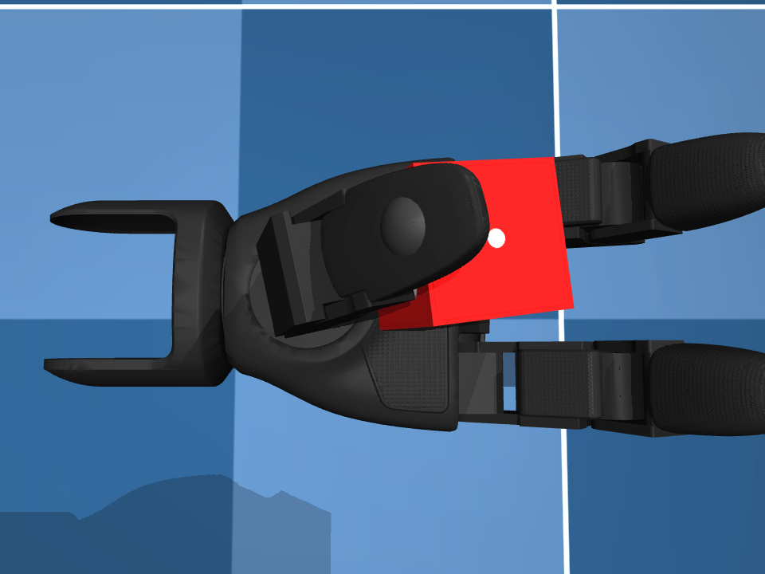
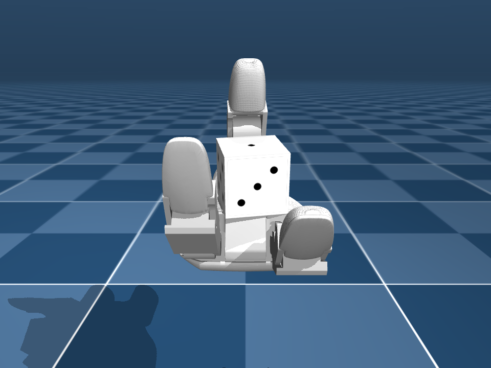
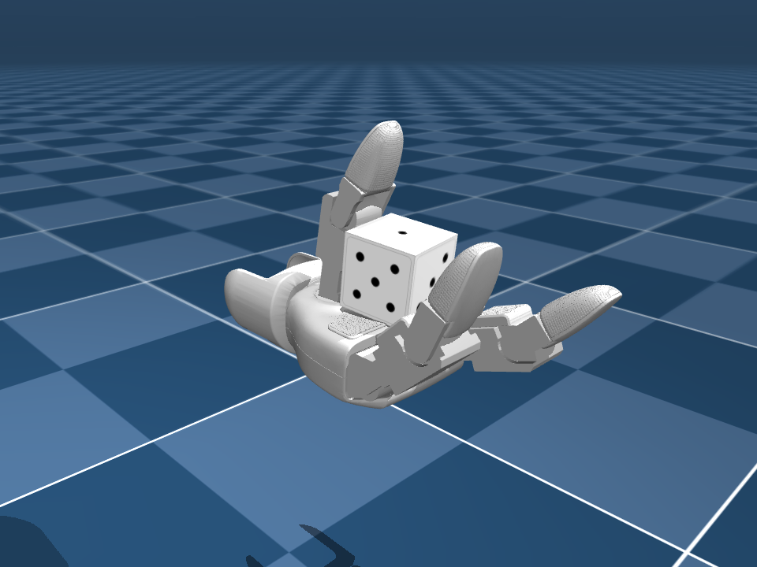
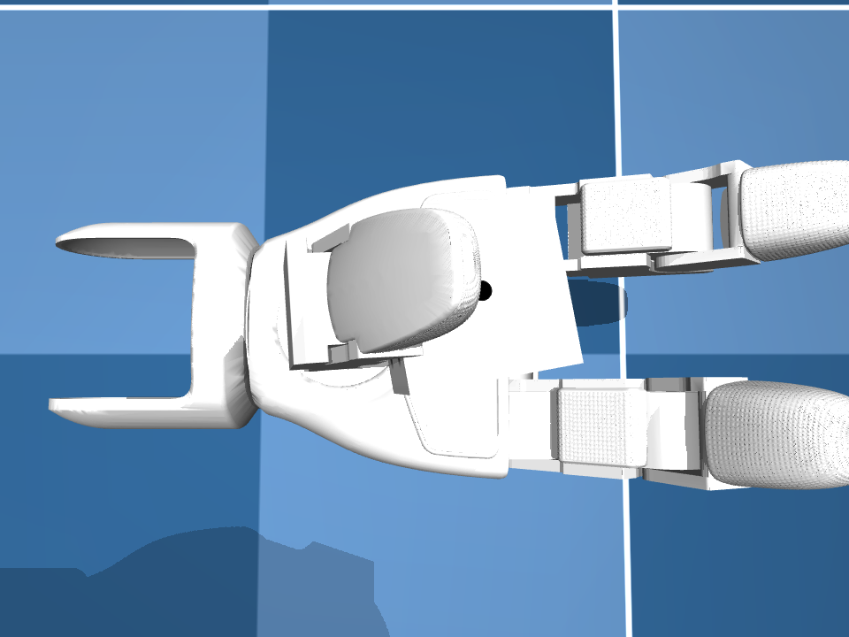
Observation & Action Space
Observation Space (48 dimensions)
| Joint positions (7) | Hand joint angles |
|---|---|
| Joint velocities (7) | Hand joint angular velocities |
| Relative cube pos (3) | Cube position relative to palm center |
| Cube quaternion (4) | Current dice orientation [w, x, y, z] |
| Cube angular vel (3) | Dice rotation rate |
| Target quaternion (4) | Desired orientation for target face |
| Fingertip positions (9) | 3D position of each fingertip (3 x 3) |
| Current face (1) | Which face is currently on top (normalized) |
| Previous action (7) | Last action taken (for smoothing awareness) |
| Contact forces (3) | Per-finger contact strength with dice |
Action Space (7 dimensions)
Actions are residual position offsets applied to a pre-tuned grip configuration. The control law is ctrl = grip_qpos + action * action_scale, where action_scale = 0.3 rad. MuJoCo's native position actuators handle PD control internally, providing stable torque output without manual PD tuning.
Reward Design
The reward function combines continuous shaping signals with sparse terminal rewards and bioinspired finger gaiting bonuses. A cooldown timer (5 steps) prevents the policy from farming gait reward through rapid lift/replace cycling.
| Component | Value | Purpose |
|---|---|---|
| Distance | -quat_dist * 1.0 |
Potential-based shaping toward target orientation |
| Progress | (prev - curr) * 15.0 |
Directional signal rewarding improvement |
| Goal bonus | +100.0 |
Sparse reward for reaching target face |
| Drop penalty | -50.0 |
Penalize losing the cube |
| Gait lift | +0.5 |
Finger lifts while 2 others hold firmly |
| Gait replace | +0.3 |
Finger re-contacts to complete gait cycle |
| Contact (3 fingers) | +0.1 |
Encourage stable grip |
| Action smooth | -0.02 * ||delta||^2 |
Penalize jittery actions |
Finger Gaiting
- Bioinspired approach: 2 fingers hold the object while 1 lifts, repositions, and re-engages
- Lift event: Triggered when a finger loses contact while the other two maintain force above threshold
- Replace event: Triggered when a lifted finger re-contacts while the other two remain in contact
- Anti-hacking: 5-step cooldown between gait events prevents reward farming without rotation progress
Curriculum Learning (7 Phases)
Training progresses through graduated difficulty levels. Each phase controls its own learning rate, exploration noise (log_std bounds), entropy bonus, episode length, action scale, and reward weights. Phases advance when eval success rate exceeds the threshold.
| Phase | Task | Max Angle | Advance SR |
|---|---|---|---|
| 1. GRIP | Hold cube stable | 0.0 rad | 95% |
| 2. MICRO_ROTATE | Tiny rotations | 0.3 rad (~17 deg) | 70% |
| 3. GAIT_EMERGE | Medium rotations, gaiting bonus | 0.8 rad (~46 deg) | 45% |
| 4. MED_ROTATE | ~90 degree rotations | 1.57 rad (~90 deg) | 40% |
| 5. SINGLE_FULL | Full rotation, one start face | 3.15 rad | 35% |
| 6. MULTI_FULL | Full rotation, multiple starts | 3.15 rad | 30% |
| 7. ALL_FACES | Any face to any face | 3.15 rad | 80% |
Dice Face Mapping
The dice uses standard layout where opposite faces sum to 7. Face detection is geometric: the axis with maximum Z-component of the cube frame determines which face points up.
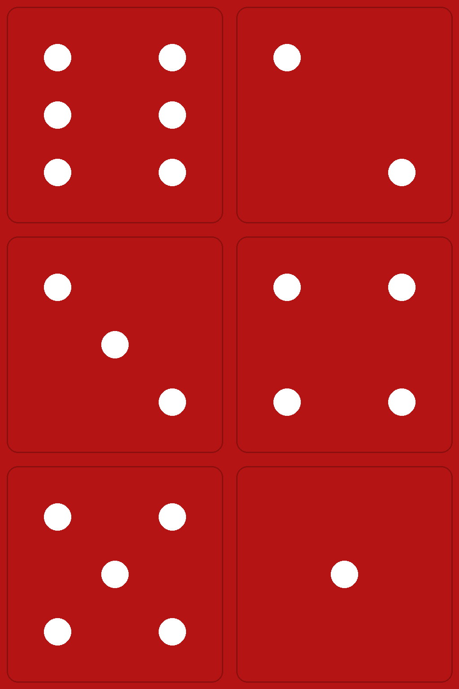
Training
MJX GPU Training
2048 parallel environments on GPU using MuJoCo XLA. Hybrid architecture: JAX handles physics stepping, PyTorch handles policy optimization. 131K transitions per update with domain randomization on friction, mass, damping, stiffness, and observation noise.
CPU Parallel Training
16-64 parallel environments using SubprocVecEnv with multiprocessing. Trains on the same mesh-collision physics used for deployment, avoiding the sim-to-sim transfer gap. Per-env GAE computation for correct advantage estimation across workers.
PPO Configuration
Custom PPO implementation with value function clipping, running observation normalization, and per-phase log_std bounds for curriculum-controlled exploration. The actor-critic network uses a 512-256-128 MLP with tanh activations.
Hyperparameters
Learning Rate
3e-4 -> 1e-5
Discount
0.99
GAE Lambda
0.95
Clip Epsilon
0.2
Rollout Steps
64
Total Updates
4000
Results
MJX Training (GPU, 2048 envs)
- All 7 curriculum phases completed successfully
- 100% eval success rate on all 6 target faces in MJX physics
- 524M timesteps, approximately 20 hours on RTX 4090
- 0% drop rate throughout training
Sim-to-Sim Transfer Gap
The MJX-trained policy achieves approximately 24% success rate when transferred to CPU MuJoCo without fine-tuning. This gap stems from collision geometry differences: MJX requires primitive shapes (boxes, spheres) while the CPU model uses full mesh collisions (STL files), producing fundamentally different contact responses that parameter-level domain randomization cannot bridge.
Challenges Overcome
Actuator Instability
Evaluation Bias
Curriculum Collapse
NaN Explosion on Phase Transitions
Data Diversity Bottleneck
Future Scope
Diffusion Policy
Replace the unimodal Gaussian policy with a diffusion-based policy that generates actions through iterative denoising. Dexterous manipulation is inherently multimodal: multiple valid finger coordination strategies exist for the same reorientation goal.
DPPO
Diffusion Policy Policy Optimization combines diffusion representations with PPO-style policy gradient fine-tuning. Enables direct optimization against reward without requiring demonstrations, matching the existing self-play RL paradigm.
Sim-to-Real Transfer
Deploy trained policies on physical Unitree Dex3-1 hardware with real-time inference. Requires addressing sensor noise, actuation delays, and unified collision geometry between simulation and real-world contact.
Technologies Used
Project Resources
Access the complete source code, training configurations, and model files: